Multi-logistic model of COVID-19 dynamics
Model, code, results
Project maintained by algmaknick Hosted on GitHub Pages — Theme by mattgraham
World

World data at: 2020-05-08
+3 day model MAPE: 0.045210
model: bi-logisticQ
coeffs: [ 3.73806426e+06 1.85546485e-06 7.44321680e+01 -5.89931983e+04]
S.Korea scenario coeffs: [0.35416971, 0.02606324, 4.35859408, 19.30413219]
rational stdev: 0.148810
forecast at the end of period: +309 days
deltaDaycases: 911
total cases: 5454079 ± 811619
total death: 375304 ± 167546
tri-logisticQ approximation splitting points: 26,59
trend coefficient of determination: 0.957216
intercept_: -9.890425229004336
coeffs_: [ 0. -0.26614025 0.00124975]
trend1 coefficient of determination: 0.874764
intercept_: -22.035447570025077
coeffs_: [ 0. 0.31660897 -0.00341999]
trend coefficient of determination: 0.990985
intercept_: -1.2049502295013816
coeffs_: [ 0. -0.33427598 0.00157377]
European Union

European Union data at: 2020-05-08
+3 day model MAPE: 0.014878
model: logisticQ
coeffs: [ 1.05567326e+06 9.49156066e-07 4.89174426e+01 -1.28199033e+05]
S.Korea scenario coeffs: [0.35416971, 0.02606324, 4.35859408, 19.30413219]
rational stdev: 0.428429
forecast at the end of period: +204 days
deltaDaycases: 267
total cases: 1425273 ± 610627
total death: 150093 ± 192912
trend coefficient of determination: 0.987487
intercept_: -2.9923444240193717
coeffs_: [ 0. -0.330267 0.00171552]
USA

USA data at: 2020-05-08
+3 day model MAPE: 0.015818
model: Richards
coeffs: [ 1.73285777e+06 3.97452751e+00 -4.39919587e+01 1.34016239e-02]
rational stdev: 0.257922
forecast at the end of period: +85 days
deltaDaycases: 299
total cases: 1727374 ± 445528
total death: 102709 ± 79472
trend coefficient of determination: 0.934514
intercept: -0.997234
slope: -0.047375
Spain

Spain data at: 2020-05-08
+3 day model MAPE: 0.011461
model: Richards
coeffs: [ 2.73938111e+05 1.20577110e+01 -4.74379082e+01 5.71775578e-03]
rational stdev: 0.441706
forecast at the end of period: +43 days
deltaDaycases: 80
total cases: 272802 ± 120498
total death: 27581 ± 36548
trend coefficient of determination: 0.937984
intercept: -0.742587
slope: -0.059547
Italy

Italy data at: 2020-05-08
+3 day model MAPE: 0.003698
model: Richards
coeffs: [ 2.32524756e+05 5.71740688e+00 -4.79058142e+01 1.07731601e-02]
rational stdev: 0.092982
forecast at the end of period: +43 days
deltaDaycases: 81
total cases: 231239 ± 21501
total death: 32155 ± 8969
trend coefficient of determination: 0.979611
intercept: -1.099491
slope: -0.056857
United Kingdom
United Kingdom data at: 2020-05-08
+3 day model MAPE: 0.021539
model: Richards
coeffs: [ 2.84157255e+05 3.54669650e+00 -4.83144689e+01 1.48608035e-02]
rational stdev: 0.158784
forecast at the end of period: +57 days
deltaDaycases: 241
total cases: 279647 ± 44403
total death: 41333 ± 19689
trend coefficient of determination: 0.909576
intercept: -1.422283
slope: -0.044011
France

France data at: 2020-05-08
+3 day model MAPE: 0.008977
model: Richards
coeffs: [1.75792747e+05 2.30340583e-01 2.53713899e+01 5.09810467e-01]
rational stdev: 0.210577
forecast at the end of period: +39 days
deltaDaycases: 4
total cases: 175759 ± 37010
total death: 26182 ± 16540
trend coefficient of determination: 0.951564
intercept: -3.687057
slope: -0.120257
Germany

Germany data at: 2020-05-08
+3 day model MAPE: 0.011295
model: logisticQ
coeffs: [ 1.64249404e+05 1.01953487e-06 3.03764548e+01 -1.38599880e+05]
S.Korea scenario coeffs: [0.35416971, 0.02606324, 4.35859408, 19.30413219]
rational stdev: 0.372257
forecast at the end of period: +127 days
deltaDaycases: 56
total cases: 221649 ± 82510
total death: 9757 ± 10896
trend coefficient of determination: 0.993397
intercept_: -4.639736650538671
coeffs_: [ 0. -0.34019111 0.00231704]
Turkey

Turkey data at: 2020-05-08
+3 day model MAPE: 0.008593
model: Richards
coeffs: [1.49628043e+05 6.40704106e-01 2.38695221e+00 1.35200070e-01]
rational stdev: 0.304911
forecast at the end of period: +98 days
deltaDaycases: 0
total cases: 149624 ± 45622
total death: 4071 ± 3723
trend coefficient of determination: 0.801877
intercept: -1.559914
slope: -0.077461
Russia
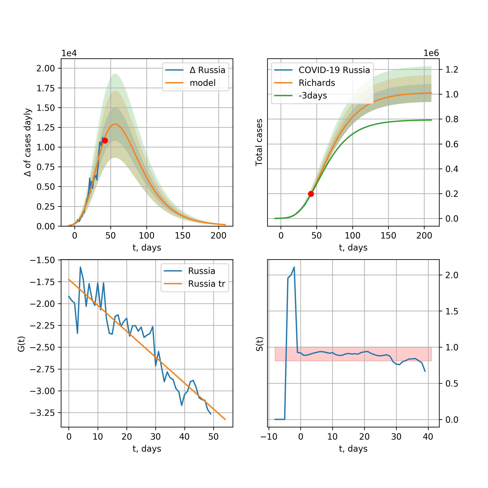
Russia data at: 2020-05-08
+3 day model MAPE: 0.035212
model: Richards
coeffs: [ 9.67699447e+05 1.22273479e+00 -4.33836238e+01 2.91727452e-02]
rational stdev: 0.080997
forecast at the end of period: +169 days
deltaDaycases: 142
total cases: 963767 ± 78062
total death: 8839 ± 2147
trend coefficient of determination: 0.862849
intercept: -1.729884
slope: -0.029501
Iran

Iran data at: 2020-05-08
+3 day model MAPE: 0.023306
model: bi-logisticQ
coeffs: [ 9.18532294e+04 7.71335266e-07 3.73579187e+01 -1.52164243e+05]
S.Korea scenario coeffs: [0.35, 0.5, 3, 1]
rational stdev: 0.320387
forecast at the end of period: +99 days
deltaDaycases: 60
total cases: 130335 ± 41757
total death: 8143 ± 7826
bi-logisticQ approximation splitting point: 17
trend coefficient of determination: 0.987745
intercept_: -2.720144864989817
coeffs_: [ 0. -0.61067547 0.00823538]
trend coefficient of determination: 0.978884
intercept_: -8.203952258024517
coeffs_: [ 0. -0.1758631 0.00094623]
Brazil

Brazil data at: 2020-05-08
+3 day model MAPE: 0.077188
model: logisticQ
coeffs: [ 4.17790823e+05 8.56699073e-06 6.64072514e+01 -1.02581153e+04]
S.Korea scenario coeffs: [0.35416971, 0.02606324, 4.35859408, 19.30413219]
rational stdev: 0.410996
forecast at the end of period: +274 days
deltaDaycases: 738
total cases: 546990 ± 224811
total death: 37300 ± 45990
trend coefficient of determination: 0.853856
intercept_: -3.9352184066094926
coeffs_: [ 0. -0.30969614 0.00231993]
Canada
Canada data at: 2020-05-08
+3 day model MAPE: 0.009425
model: Richards
coeffs: [ 1.05706970e+05 2.37027544e+00 -5.99419611e+01 1.86409629e-02]
rational stdev: 0.189116
forecast at the end of period: +98 days
deltaDaycases: 29
total cases: 105046 ± 19866
total death: 7224 ± 4098
trend coefficient of determination: 0.929307
intercept: -1.551337
slope: -0.047677
Belgium

Belgium data at: 2020-05-08
+3 day model MAPE: 0.007683
model: logisticQ
coeffs: [ 5.24731379e+04 1.56124745e-06 3.20491388e+01 -7.92429672e+04]
S.Korea scenario coeffs: [0.35416971, 0.02606324, 4.35859408, 19.30413219]
rational stdev: 0.343955
forecast at the end of period: +127 days
deltaDaycases: 56
total cases: 70129 ± 24121
total death: 11489 ± 11855
trend coefficient of determination: 0.978898
intercept_: -4.260426403334985
coeffs_: [ 0. -0.32377151 0.00235275]
Peru

Peru data at: 2020-05-08
+3 day model MAPE: 0.049952
model: logisticQ
coeffs: [ 1.12284779e+05 5.93821880e-06 5.24329203e+01 -1.83514936e+04]
S.Korea scenario coeffs: [0.35416971, 0.02606324, 4.35859408, 19.30413219]
rational stdev: 0.363452
forecast at the end of period: +225 days
deltaDaycases: 124
total cases: 149705 ± 54410
total death: 4148 ± 4522
trend coefficient of determination: 0.968387
intercept_: -3.583266815034216
coeffs_: [ 0. -0.29604717 0.00214708]
Netherlands
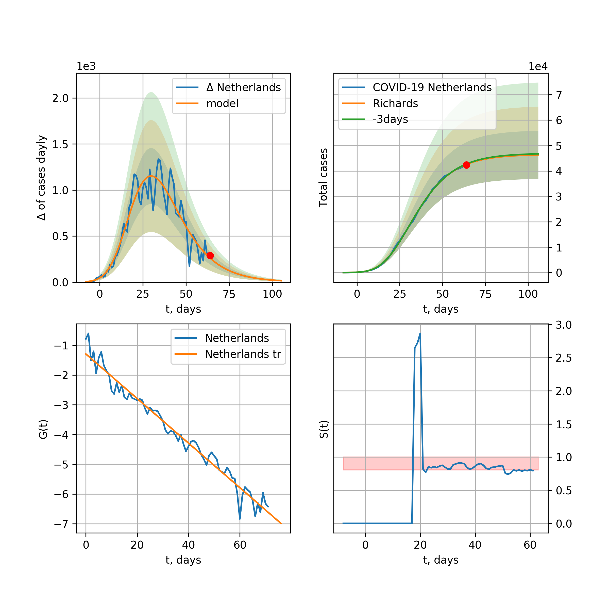
Netherlands data at: 2020-05-08
+3 day model MAPE: 0.006101
model: Richards
coeffs: [4.66191104e+04 5.54923000e-01 1.58202949e+00 1.28645458e-01]
rational stdev: 0.202153
forecast at the end of period: +43 days
deltaDaycases: 15
total cases: 46409 ± 9381
total death: 5908 ± 3582
trend coefficient of determination: 0.968441
intercept: -1.257252
slope: -0.074481
India

India data at: 2020-05-08
+3 day model MAPE: 0.066087
model: logisticQ
coeffs: [ 7.90651930e+04 1.22604186e-03 2.30709642e+01 -8.00239527e+01]
S.Korea scenario coeffs: [0.35416971, 0.02606324, 4.35859408, 19.30413219]
rational stdev: 0.201717
forecast at the end of period: +155 days
deltaDaycases: 15
total cases: 106807 ± 21544
total death: 3549 ± 2147
trend coefficient of determination: 0.976324
intercept_: -9.321045734425729
coeffs_: [ 0. -0.22478739 0.00294501]
Switzerland

Switzerland data at: 2020-05-08
+3 day model MAPE: 0.005989
model: logisticQ
coeffs: [ 2.93935762e+04 9.91041449e-07 2.54899532e+01 -1.52896730e+05]
S.Korea scenario coeffs: [0.35416971, 0.02606324, 4.35859408, 19.30413219]
rational stdev: 0.356635
forecast at the end of period: +99 days
deltaDaycases: 14
total cases: 39622 ± 14130
total death: 2391 ± 2558
trend coefficient of determination: 0.985697
intercept_: -3.53076041205232
coeffs_: [ 0. -0.34602553 0.00238372]
Ecuador

Ecuador data at: 2020-05-08
+3 day model MAPE: 0.177818
model: logisticQ
coeffs: [ 3.23047541e+04 7.96953311e-07 3.57218676e+01 -1.09505381e+05]
S.Korea scenario coeffs: [0.35416971, 0.02606324, 4.35859408, 19.30413219]
rational stdev: 0.361204
forecast at the end of period: +197 days
deltaDaycases: 8
total cases: 43550 ± 15730
total death: 2575 ± 2790
trend coefficient of determination: 0.685115
intercept_: -5.330213250222788
coeffs_: [ 0. -0.33253927 0.00314692]
Portugal
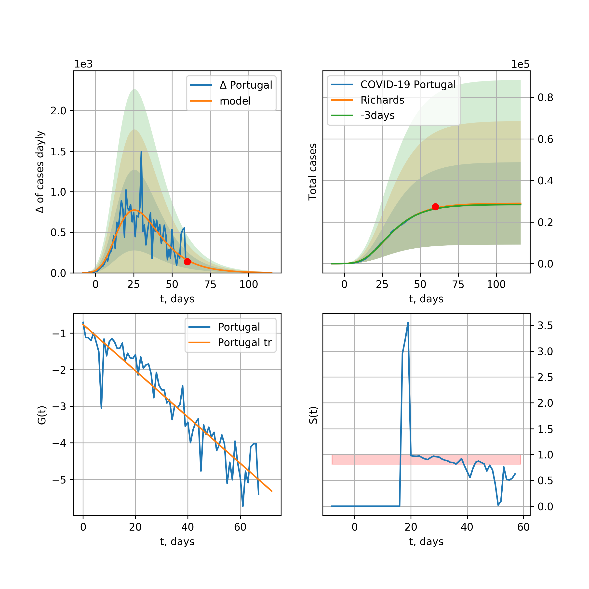
Portugal data at: 2020-05-08
+3 day model MAPE: 0.010210
model: Richards
coeffs: [ 2.88266068e+04 7.26451008e+00 -3.66682551e+01 1.01250674e-02]
rational stdev: 0.896830
forecast at the end of period: +57 days
deltaDaycases: 2
total cases: 28788 ± 25818
total death: 1176 ± 3164
trend coefficient of determination: 0.874687
intercept: -0.770998
slope: -0.062553
Saudi Arabia

Saudi Arabia data at: 2020-05-08
+3 day model MAPE: 0.057675
model: logisticQ
coeffs: [ 5.39010348e+04 2.66777905e-05 5.26732994e+01 -4.22478189e+03]
S.Korea scenario coeffs: [0.35416971, 0.02606324, 4.35859408, 19.30413219]
rational stdev: 0.354874
forecast at the end of period: +211 days
deltaDaycases: 96
total cases: 71158 ± 25252
total death: 459 ± 488
trend coefficient of determination: 0.813482
intercept_: -4.274666414293723
coeffs_: [ 0. -0.23804864 0.00157903]
Sweden

Sweden data at: 2020-05-08
+3 day model MAPE: 0.007289
model: Richards
coeffs: [ 4.05260957e+04 5.61041306e-01 -1.58395772e+01 7.32892424e-02]
rational stdev: 0.288673
forecast at the end of period: +99 days
deltaDaycases: 14
total cases: 40187 ± 11601
total death: 5050 ± 4373
trend coefficient of determination: 0.822583
intercept: -1.561298
slope: -0.045027
Pakistan

Pakistan data at: 2020-05-08
+3 day model MAPE: 0.033918
model: bi-logisticQ
coeffs: [ 4.51325915e+04 5.22299699e-06 6.10158487e+01 -1.71298715e+04]
S.Korea scenario coeffs: [0.35416971, 0.02606324, 4.35859408, 19.30413219]
rational stdev: 0.422516
forecast at the end of period: +85 days
deltaDaycases: 5
total cases: 45488 ± 19219
total death: 1023 ± 1296
bi-logisticQ approximation splitting point: 20
trend coefficient of determination: 0.391568
intercept_: -3.9808806978581046
coeffs_: [ 0. -0.04620278 -0.00453428]
trend coefficient of determination: 0.936260
intercept_: -3.856647542116999
coeffs_: [ 0. -0.24367244 0.00165147]
Ireland

Ireland data at: 2020-05-08
+3 day model MAPE: 0.005508
model: logisticQ
coeffs: [ 2.33253217e+04 1.17449502e-05 3.45438198e+01 -1.13762017e+04]
S.Korea scenario coeffs: [0.35416971, 0.02606324, 4.35859408, 19.30413219]
rational stdev: 0.335648
forecast at the end of period: +141 days
deltaDaycases: 20
total cases: 31280 ± 10499
total death: 1983 ± 1996
trend coefficient of determination: 0.980625
intercept_: -3.6465043644456827
coeffs_: [ 0. -0.29099667 0.0019051 ]
Mexico
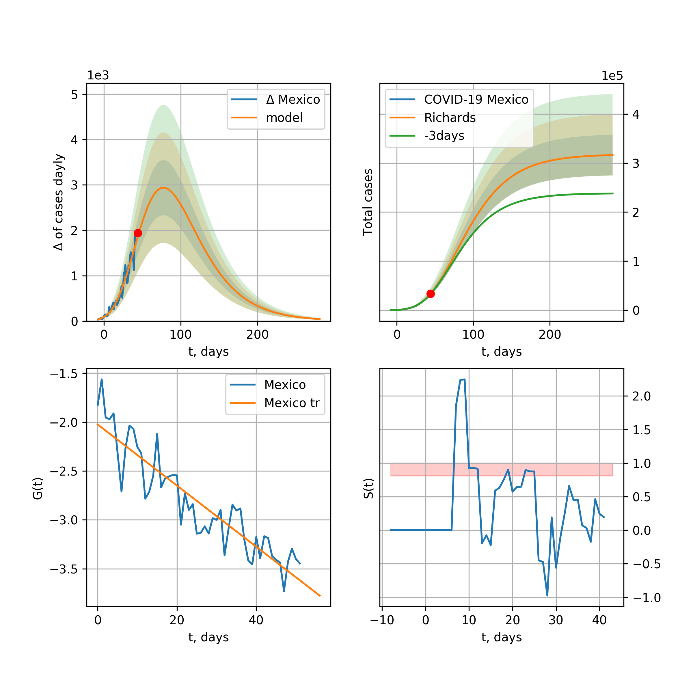
Mexico data at: 2020-05-08
+3 day model MAPE: 0.001248
model: Richards
coeffs: [ 2.84932378e+05 4.19046644e-01 -2.68483291e+01 6.42552156e-02]
rational stdev: 0.128031
forecast at the end of period: +239 days
deltaDaycases: 29
total cases: 283850 ± 36341
total death: 28455 ± 10929
trend coefficient of determination: 0.834338
intercept: -2.057345
slope: -0.032363
Singapore

Singapore data at: 2020-05-08
+3 day model MAPE: 0.063485
model: bi-logisticQ
coeffs: [ 2.20556378e+04 8.25405494e-04 8.37102055e+01 -1.27020466e+02]
S.Korea scenario coeffs: [0.35, 0.5, 4.0, 1.0]
rational stdev: 0.297758
forecast at the end of period: +99 days
deltaDaycases: 0
total cases: 22154 ± 6596
total death: 20 ± 17
bi-logisticQ approximation splitting point: 35
trend coefficient of determination: 0.914568
intercept_: -2.036640634366525
coeffs_: [ 0. -0.39517788 0.00592335]
trend coefficient of determination: 0.907106
intercept_: -9.706294572681573
coeffs_: [ 0. 0.08465005 -0.00117992]
Chile
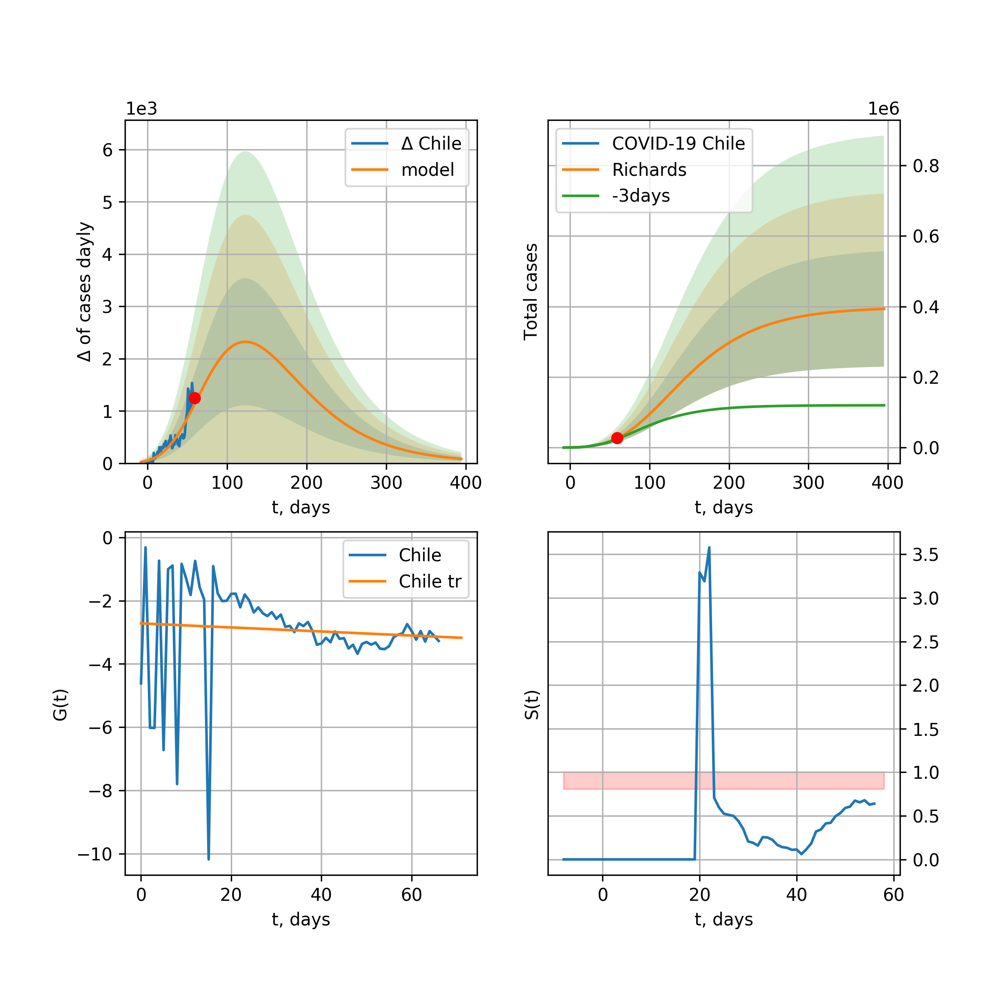
Chile data at: 2020-05-08
+3 day model MAPE: 0.091217
model: Richards
coeffs: [ 2.77567617e+05 1.04504989e+00 -1.24474070e+02 1.67048075e-02]
rational stdev: 0.414892
forecast at the end of period: +295 days
deltaDaycases: 69
total cases: 273610 ± 113519
total death: 3097 ± 3854
trend coefficient of determination: 0.005104
intercept: -2.716224
slope: -0.005956
Israel

Israel data at: 2020-05-08
+3 day model MAPE: 0.002451
model: Richards
coeffs: [ 1.72796769e+04 7.21814552e+00 -3.96634796e+01 1.19234184e-02]
rational stdev: 0.133744
forecast at the end of period: +43 days
deltaDaycases: 1
total cases: 17260 ± 2308
total death: 257 ± 103
trend coefficient of determination: 0.875584
intercept: -1.159734
slope: -0.084393
Austria

Austria data at: 2020-05-08
+3 day model MAPE: 0.006235
model: logisticQ
coeffs: [ 1.51597762e+04 1.21476986e-06 2.33010697e+01 -1.64594164e+05]
S.Korea scenario coeffs: [0.35416971, 0.02606324, 4.35859408, 19.30413219]
rational stdev: 0.320565
forecast at the end of period: +85 days
deltaDaycases: 4
total cases: 20483 ± 6566
total death: 797 ± 766
trend coefficient of determination: 0.980888
intercept_: -2.788312846260375
coeffs_: [ 0. -0.35351909 0.00239569]
Belarus
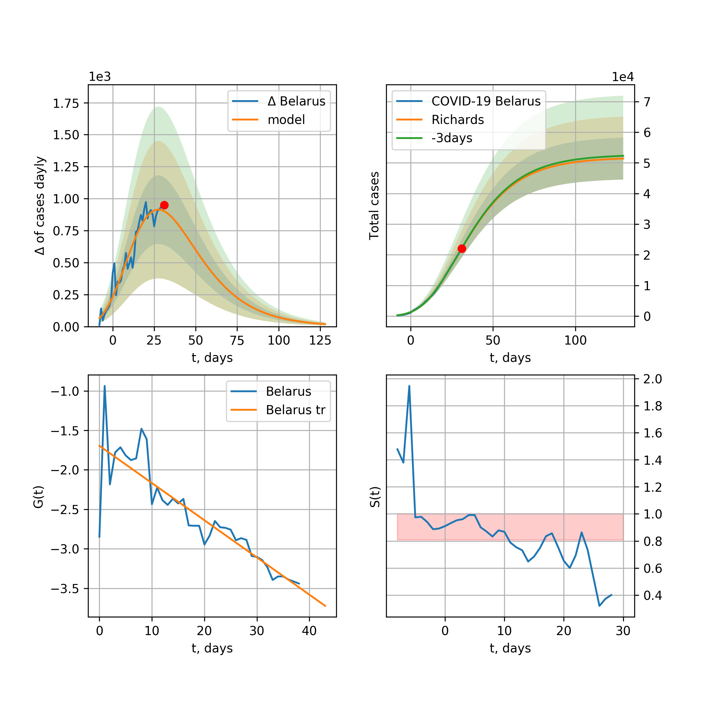
Belarus data at: 2020-05-08
+3 day model MAPE: 0.006707
model: Richards
coeffs: [ 5.17571517e+04 1.67564943e+00 -4.46929450e+01 2.90484906e-02]
rational stdev: 0.134424
forecast at the end of period: +99 days
deltaDaycases: 18
total cases: 51379 ± 6906
total death: 294 ± 118
trend coefficient of determination: 0.760134
intercept: -1.689937
slope: -0.047264
Japan
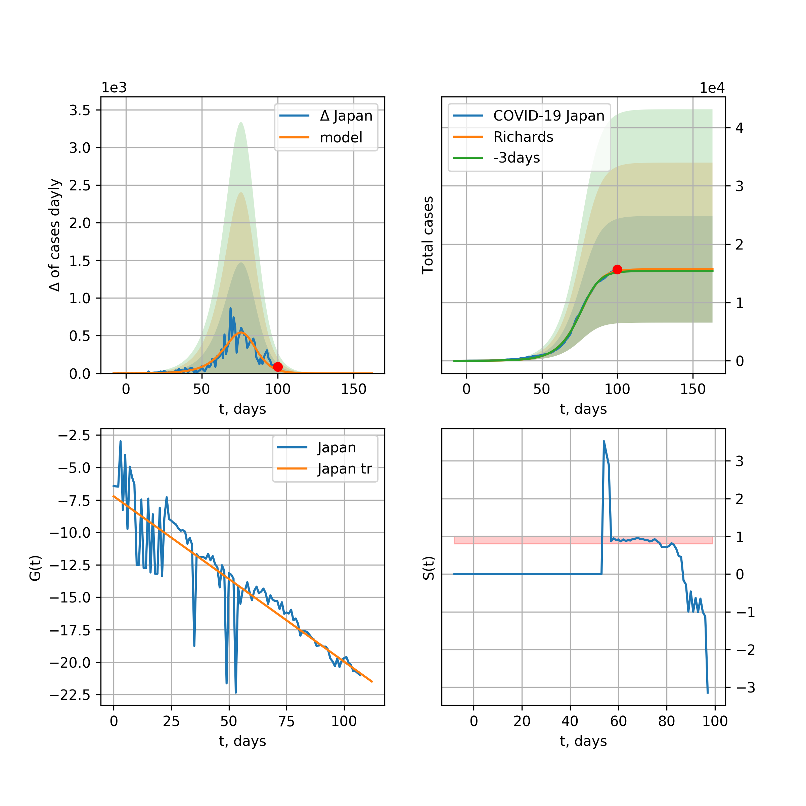
Japan data at: 2020-05-08
+3 day model MAPE: 0.017628
model: Richards
coeffs: [1.56068543e+04 9.99360670e-02 7.94281190e+01 1.68654048e+00]
rational stdev: 0.560372
forecast at the end of period: +64 days
deltaDaycases: 0
total cases: 15606 ± 8745
total death: 591 ± 993
trend coefficient of determination: 0.809059
intercept: -7.322361
slope: -0.131474
Qatar

Qatar data at: 2020-05-08
+3 day model MAPE: 0.050120
model: bi-logisticQ
coeffs: [ 1.63960685e+04 7.91978613e-06 4.81520395e+01 -1.87058181e+04]
S.Korea scenario coeffs: [0.35416971, 0.02606324, 4.35859408, 19.30413219]
rational stdev: 0.349026
forecast at the end of period: +225 days
deltaDaycases: 2
total cases: 33889 ± 11828
total death: 20 ± 20
bi-logisticQ approximation splitting point: 31
trend coefficient of determination: 0.919409
intercept_: -1.6852707465713292
coeffs_: [ 0. -0.86529683 0.02183056]
trend coefficient of determination: 0.950294
intercept_: -7.49000588204837
coeffs_: [ 0. -0.07142327 -0.00026884]
Poland

Poland data at: 2020-05-08
+3 day model MAPE: 0.014643
model: Richards
coeffs: [ 2.01769195e+04 3.98662812e+00 -4.92678200e+01 1.31270730e-02]
rational stdev: 0.201631
forecast at the end of period: +71 days
deltaDaycases: 7
total cases: 20033 ± 4039
total death: 1011 ± 611
trend coefficient of determination: 0.746772
intercept: -1.196889
slope: -0.046280
UAE

UAE data at: 2020-05-08
+3 day model MAPE: 0.009343
model: Richards
coeffs: [ 3.22934126e+04 2.52374348e+00 -6.35390023e+01 1.78325345e-02]
rational stdev: 0.080541
forecast at the end of period: +85 days
deltaDaycases: 21
total cases: 31828 ± 2563
total death: 329 ± 79
trend coefficient of determination: 0.822605
intercept: -1.873306
slope: -0.042669
Romania
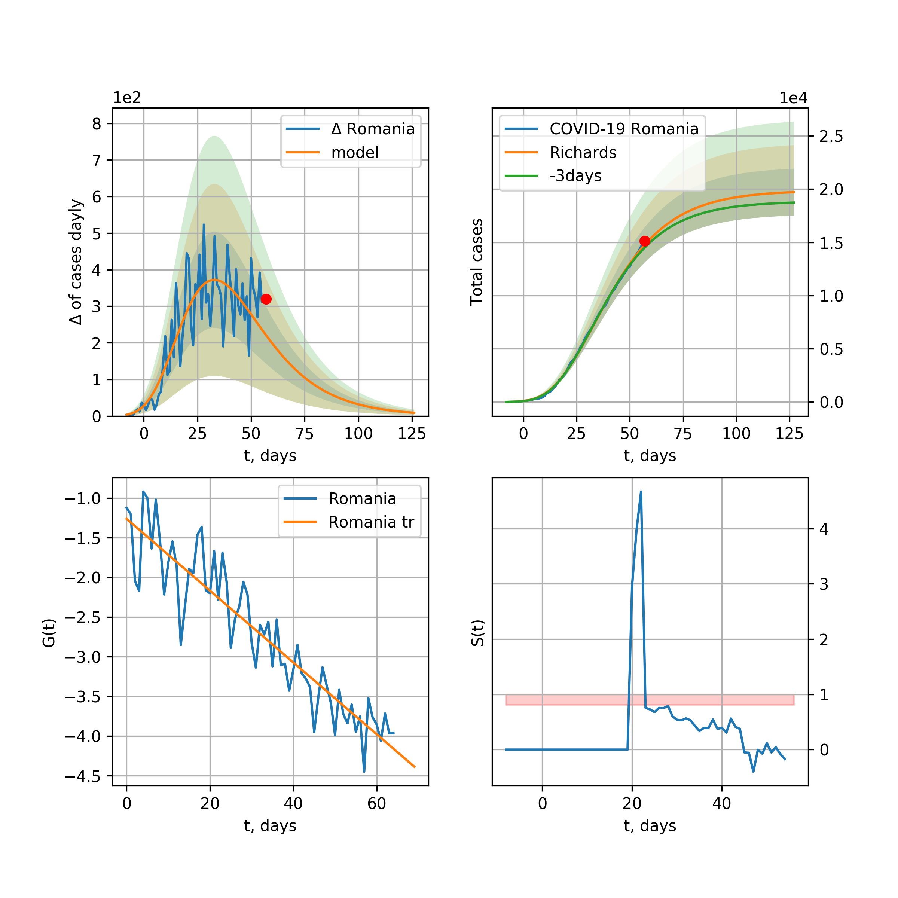
Romania data at: 2020-05-08
+3 day model MAPE: 0.017654
model: Richards
coeffs: [ 1.95206778e+04 3.96915158e+00 -5.01258339e+01 1.31355986e-02]
rational stdev: 0.101416
forecast at the end of period: +71 days
deltaDaycases: 7
total cases: 19376 ± 1965
total death: 1207 ± 367
trend coefficient of determination: 0.849236
intercept: -1.266080
slope: -0.045763
Ukraine
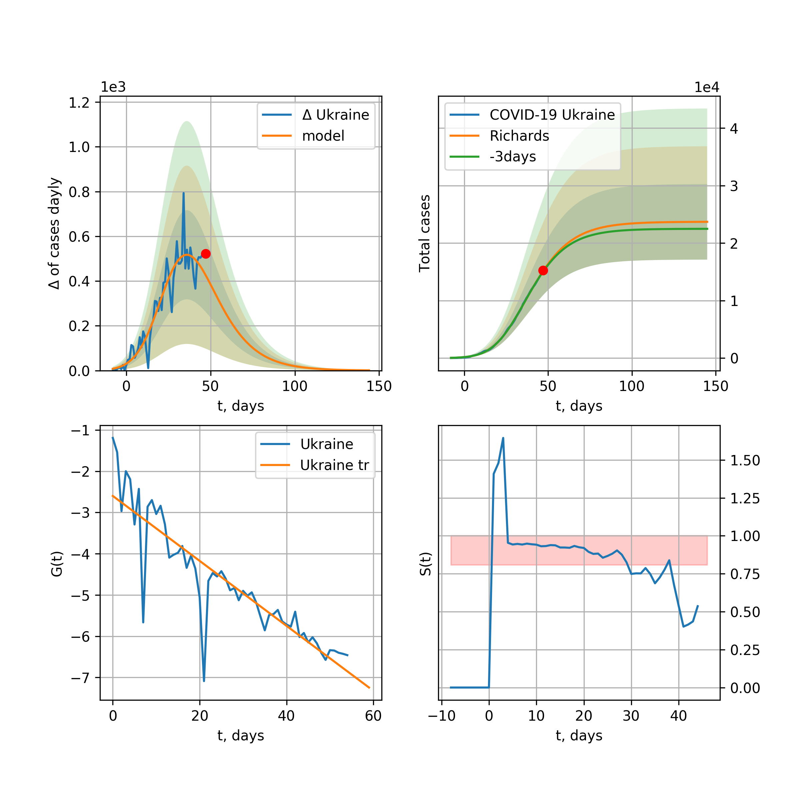
Ukraine data at: 2020-05-08
+3 day model MAPE: 0.000264
model: Richards
coeffs: [2.30132034e+04 2.02538839e-01 2.14549587e+01 3.53169098e-01]
rational stdev: 0.283205
forecast at the end of period: +99 days
deltaDaycases: 0
total cases: 23003 ± 6514
total death: 585 ± 497
trend coefficient of determination: 0.794433
intercept: -2.713479
slope: -0.083684
Indonesia

Indonesia data at: 2020-05-08
+3 day model MAPE: 0.033450
model: logisticQ
coeffs: [ 1.59229393e+04 9.94049432e-06 2.43276651e+01 -9.49966812e+03]
S.Korea scenario coeffs: [0.35416971, 0.02606324, 4.35859408, 19.30413219]
rational stdev: 0.071022
forecast at the end of period: +113 days
deltaDaycases: 24
total cases: 20992 ± 1490
total death: 1509 ± 321
trend coefficient of determination: 0.976091
intercept_: -8.514750816675559
coeffs_: [ 0. -0.14940376 0.00109396]
Bangladesh

Bangladesh data at: 2020-05-08
+3 day model MAPE: 0.121997
model: bi-logisticQ
coeffs: [ 1.52576917e+04 4.82282721e-06 4.47207282e+01 -3.35831063e+04]
S.Korea scenario coeffs: [0.35416971, 0.02606324, 4.35859408, 19.30413219]
rational stdev: 0.301595
forecast at the end of period: +43 days
deltaDaycases: 1
total cases: 15306 ± 4616
total death: 240 ± 217
bi-logisticQ approximation splitting point: 25
trend coefficient of determination: 0.232653
intercept_: -6.325425729788838
coeffs_: [ 0. 0.22449345 -0.0150245 ]
trend coefficient of determination: 0.980575
intercept_: 3.92534182185733
coeffs_: [ 0. -0.4635868 0.00319602]
South_Korea

South Korea data at: 2020-05-08
+3 day model MAPE: 0.001180
model: bi-logisticQ
coeffs: [ 2.84329170e+03 1.31254671e-06 3.12651359e+01 -1.33849021e+05]
rational stdev: 0.131535
forecast at the end of period: +15 days
deltaDaycases: 0
total cases: 10743 ± 1413
total death: 253 ± 99
bi-logisticQ approximation splitting point: 25
trend coefficient of determination: 0.936575
intercept_: -5.550309986859278
coeffs_: [ 0. -0.32029791 -0.00074495]
trend coefficient of determination: 0.776902
intercept_: -10.852764783771322
coeffs_: [ 0.00000000e+00 -8.49319827e-02 9.19252795e-05]
Denmark

Denmark data at: 2020-05-08
+3 day model MAPE: 0.028681
model: bi-logisticQ
coeffs: [ 9.00133084e+03 8.12019223e-07 3.47709621e+01 -1.54865668e+05]
S.Korea scenario coeffs: [0.35416971, 0.02606324, 4.35859408, 19.30413219]
rational stdev: 0.320525
forecast at the end of period: +141 days
deltaDaycases: 7
total cases: 12940 ± 4147
total death: 661 ± 635
bi-logisticQ approximation splitting point: 18
trend coefficient of determination: 0.963211
intercept_: -1.9308894789691964
coeffs_: [ 0. -0.26605777 -0.01390014]
trend coefficient of determination: 0.959211
intercept_: -6.886230979724098
coeffs_: [ 0. -0.14264812 0.00063184]
Serbia

Serbia data at: 2020-05-08
+3 day model MAPE: 0.009873
model: logisticQ
coeffs: [ 1.02368623e+04 2.75770923e-06 2.89329116e+01 -5.11487803e+04]
S.Korea scenario coeffs: [0.35416971, 0.02606324, 4.35859408, 19.30413219]
rational stdev: 0.279242
forecast at the end of period: +141 days
deltaDaycases: 2
total cases: 13829 ± 3861
total death: 290 ± 242
trend coefficient of determination: 0.969267
intercept_: -4.01574776425173
coeffs_: [ 0. -0.26759311 0.00172679]
Philippines
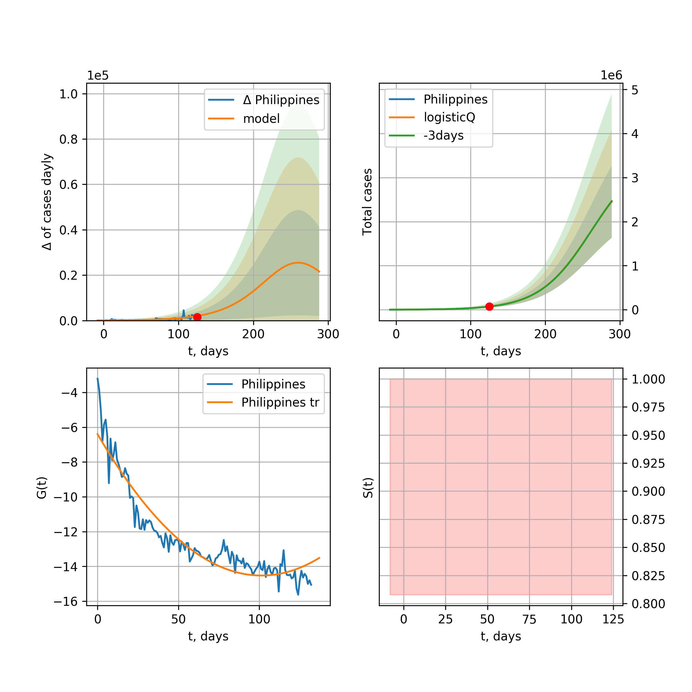
Philippines data at: 2020-05-08
+3 day model MAPE: 0.061523
model: logisticQ
coeffs: [ 1.06069452e+04 8.77198686e-07 2.70711170e+01 -1.18432325e+05]
S.Korea scenario coeffs: [0.35416971, 0.02606324, 4.35859408, 19.30413219]
rational stdev: 0.368513
forecast at the end of period: +99 days
deltaDaycases: 27
total cases: 13743 ± 5064
total death: 914 ± 1010
trend coefficient of determination: 0.945896
intercept_: -4.4846674615525295
coeffs_: [ 0. -0.33291043 0.00332071]
Norway

Norway data at: 2020-05-08
+3 day model MAPE: 0.005932
model: Richards
coeffs: [ 8.16401510e+03 7.84063682e-01 -7.37701863e+00 1.04795458e-01]
rational stdev: 0.225092
forecast at the end of period: +43 days
deltaDaycases: 0
total cases: 8157 ± 1836
total death: 220 ± 148
trend coefficient of determination: 0.929067
intercept: -1.280535
slope: -0.079023
Czechia

Czechia data at: 2020-05-08
+3 day model MAPE: 0.013362
model: logisticQ
coeffs: [ 7.73550579e+03 9.86502027e-07 2.47585390e+01 -1.44548639e+05]
S.Korea scenario coeffs: [0.35416971, 0.02606324, 4.35859408, 19.30413219]
rational stdev: 0.342172
forecast at the end of period: +99 days
deltaDaycases: 4
total cases: 10406 ± 3560
total death: 351 ± 360
trend coefficient of determination: 0.913272
intercept_: -3.8959202564174635
coeffs_: [ 0. -0.2912724 0.00206921]
Colombia

Colombia data at: 2020-05-08
+3 day model MAPE: 0.057598
model: Richards
coeffs: [ 7.46320301e+04 1.10536767e+00 -1.09222769e+02 1.84049142e-02]
rational stdev: 0.321910
forecast at the end of period: +253 days
deltaDaycases: 18
total cases: 73731 ± 23735
total death: 3139 ± 3031
trend coefficient of determination: 0.671961
intercept: -1.407511
slope: -0.039886
Australia

Australia data at: 2020-05-08
+3 day model MAPE: 0.004182
model: logisticQ
coeffs: [ 6.69118820e+03 2.41176793e-06 1.81938115e+01 -9.37618666e+04]
S.Korea scenario coeffs: [0.35416971, 0.02606324, 4.35859408, 19.30413219]
rational stdev: 0.159788
forecast at the end of period: +43 days
deltaDaycases: 16
total cases: 8911 ± 1423
total death: 124 ± 59
trend coefficient of determination: 0.969678
intercept_: -4.569341576029546
coeffs_: [ 0. -0.28985961 0.0019133 ]
Malaysia

Malaysia data at: 2020-05-08
+3 day model MAPE: 0.015907
model: logisticQ
coeffs: [ 6.26515397e+03 1.24919857e-06 2.81771964e+01 -1.00766923e+05]
S.Korea scenario coeffs: [0.35416971, 0.02606324, 4.35859408, 19.30413219]
rational stdev: 0.332765
forecast at the end of period: +99 days
deltaDaycases: 10
total cases: 8312 ± 2766
total death: 136 ± 135
trend coefficient of determination: 0.850704
intercept_: -4.375639220631703
coeffs_: [ 0. -0.25387342 0.00174359]
Egypt

Egypt data at: 2020-05-08
+3 day model MAPE: 0.069566
model: logisticQ
coeffs: [ 1.57231394e+04 1.07360578e-05 4.20302201e+01 -7.36304444e+03]
S.Korea scenario coeffs: [0.35416971, 0.02606324, 4.35859408, 19.30413219]
rational stdev: 0.153348
forecast at the end of period: +197 days
deltaDaycases: 19
total cases: 20767 ± 3184
total death: 1232 ± 566
trend coefficient of determination: 0.940816
intercept_: -7.520111924568366
coeffs_: [ 0. -0.13826967 0.00095625]
Finland
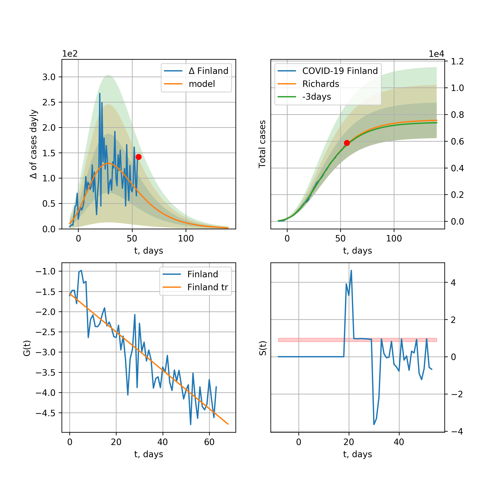
Finland data at: 2020-05-08
+3 day model MAPE: 0.008547
model: Richards
coeffs: [ 7.51974486e+03 2.66066271e+00 -5.75294229e+01 1.77081149e-02]
rational stdev: 0.174932
forecast at the end of period: +85 days
deltaDaycases: 1
total cases: 7481 ± 1308
total death: 338 ± 177
trend coefficient of determination: 0.822306
intercept: -1.542738
slope: -0.048560
Morocco

Morocco data at: 2020-05-08
+3 day model MAPE: 0.040796
model: logisticQ
coeffs: [ 6.24861294e+03 3.53091741e-06 2.87916019e+01 -3.20038604e+04]
S.Korea scenario coeffs: [0.35416971, 0.02606324, 4.35859408, 19.30413219]
rational stdev: 0.255185
forecast at the end of period: +127 days
deltaDaycases: 7
total cases: 8322 ± 2123
total death: 271 ± 207
trend coefficient of determination: 0.969229
intercept_: -4.902872896801513
coeffs_: [ 0. -0.25671634 0.00226042]
Argentina

Argentina data at: 2020-05-08
+3 day model MAPE: 0.028897
model: Richards
coeffs: [ 9.29793251e+03 2.98212049e+00 -7.89343718e+01 1.27141210e-02]
rational stdev: 0.265204
forecast at the end of period: +127 days
deltaDaycases: 1
total cases: 9256 ± 2454
total death: 483 ± 384
trend coefficient of determination: 0.038471
intercept: -2.575611
slope: -0.021588
Algeria

Algeria data at: 2020-05-08
+3 day model MAPE: 0.062273
model: logisticQ
coeffs: [ 6.99020104e+03 1.46292807e-06 3.25769599e+01 -5.52230470e+04]
S.Korea scenario coeffs: [0.35416971, 0.02606324, 4.35859408, 19.30413219]
rational stdev: 0.273698
forecast at the end of period: +155 days
deltaDaycases: 8
total cases: 9251 ± 2532
total death: 840 ± 689
trend coefficient of determination: 0.937014
intercept_: -6.255302055283446
coeffs_: [ 0. -0.21784794 0.00214925]
Luxembourg
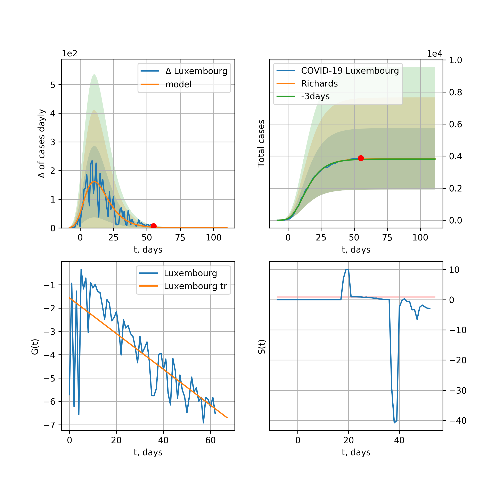
Luxembourg data at: 2020-05-08
+3 day model MAPE: 0.004056
model: Richards
coeffs: [ 3.82726210e+03 1.88606168e+01 -3.31486389e+01 6.11555099e-03]
rational stdev: 0.545172
forecast at the end of period: +57 days
deltaDaycases: 0
total cases: 3827 ± 2086
total death: 98 ± 160
trend coefficient of determination: 0.544550
intercept: -1.563414
slope: -0.076277
Thailand

Thailand data at: 2020-05-08
+3 day model MAPE: 0.003228
model: Richards
coeffs: [ 2.97635218e+03 1.41345559e+01 -3.62180584e+01 8.88161064e-03]
rational stdev: 0.094197
forecast at the end of period: +15 days
deltaDaycases: 0
total cases: 2973 ± 280
total death: 55 ± 15
trend coefficient of determination: 0.869215
intercept: -1.231193
slope: -0.118723
Hungary

Hungary data at: 2020-05-08
+3 day model MAPE: 0.002293
model: logisticQ
coeffs: [ 3.50295717e+03 2.94274345e-06 3.39088345e+01 -3.82379518e+04]
S.Korea scenario coeffs: [0.35416971, 0.02606324, 4.35859408, 19.30413219]
rational stdev: 0.298345
forecast at the end of period: +155 days
deltaDaycases: 2
total cases: 4708 ± 1404
total death: 580 ± 519
trend coefficient of determination: 0.976895
intercept_: -3.39012390899679
coeffs_: [ 0. -0.24209135 0.00158095]
Greece

Greece data at: 2020-05-08
+3 day model MAPE: 0.008733
model: logisticQ
coeffs: [ 2.62077000e+03 1.14561913e-06 2.33986599e+01 -1.09111642e+05]
S.Korea scenario coeffs: [0.35416971, 0.02606324, 4.35859408, 19.30413219]
rational stdev: 0.276604
forecast at the end of period: +99 days
deltaDaycases: 1
total cases: 3525 ± 975
total death: 196 ± 162
trend coefficient of determination: 0.939799
intercept_: -3.3098255007609936
coeffs_: [ 0. -0.30411208 0.00234557]
Iraq

Iraq data at: 2020-05-08
+3 day model MAPE: 0.025057
model: bi-logisticQ
coeffs: [-7.98459366e+02 8.88160490e-03 2.30922794e+01 -3.70759739e+01]
rational stdev: 0.070121
forecast at the end of period: +127 days
deltaDaycases: 0
total cases: 2321 ± 162
total death: 92 ± 19
bi-logisticQ approximation splitting point: 32
trend coefficient of determination: 0.943011
intercept_: -6.485709272215987
coeffs_: [ 0. -0.09183938 -0.00203399]
trend coefficient of determination: 0.267260
intercept_: -17.25361108676274
coeffs_: [ 0. 0.28555335 -0.00332001]
Croatia

Croatia data at: 2020-05-08
+3 day model MAPE: 0.006781
model: logisticQ
coeffs: [ 2.10227646e+03 1.21954485e-06 2.64824942e+01 -1.19667342e+05]
S.Korea scenario coeffs: [0.35416971, 0.02606324, 4.35859408, 19.30413219]
rational stdev: 0.327772
forecast at the end of period: +113 days
deltaDaycases: 0
total cases: 2836 ± 929
total death: 112 ± 110
trend coefficient of determination: 0.978542
intercept_: -2.2442455734282722
coeffs_: [ 0. -0.27778148 0.00167797]
Iceland

Iceland data at: 2020-05-08
+3 day model MAPE: 0.000005
model: logisticQ
coeffs: [ 1.80194553e+03 9.82044425e-06 1.33193019e+01 -1.80424238e+04]
rational stdev: 0.066084
forecast at the end of period: +43 days
deltaDaycases: 0
total cases: 1801 ± 119
total death: 10 ± 1
trend coefficient of determination: 0.937742
intercept_: -5.79316543921912
coeffs_: [ 0. -0.16886438 -0.00018922]
Estonia

Estonia data at: 2020-05-08
+3 day model MAPE: 0.000408
model: Richards
coeffs: [1.76168732e+03 2.12811349e-01 3.35271774e+00 4.67637270e-01]
rational stdev: 0.134257
forecast at the end of period: +29 days
deltaDaycases: 0
total cases: 1759 ± 236
total death: 57 ± 22
trend coefficient of determination: 0.854587
intercept: -4.060447
slope: -0.102774
Bulgaria

Bulgaria data at: 2020-05-08
+3 day model MAPE: 0.006809
model: logisticQ
coeffs: [ 2.68208948e+03 3.44363818e-06 3.47524028e+01 -2.10479133e+04]
S.Korea scenario coeffs: [0.35416971, 0.02606324, 4.35859408, 19.30413219]
rational stdev: 0.174918
forecast at the end of period: +204 days
deltaDaycases: 0
total cases: 3606 ± 630
total death: 165 ± 86
trend coefficient of determination: 0.901979
intercept_: -5.939913679842645
coeffs_: [ 0. -0.19635307 0.00191538]
New Zealand

New Zealand data at: 2020-05-08
+3 day model MAPE: 0.002468
model: logisticQ
coeffs: [ 1.46699580e+03 3.78840636e-06 2.48754983e+01 -6.56471720e+04]
S.Korea scenario coeffs: [0.35416971, 0.02606324, 4.35859408, 19.30413219]
rational stdev: 0.368771
forecast at the end of period: +71 days
deltaDaycases: 2
total cases: 1963 ± 724
total death: 27 ± 29
trend coefficient of determination: 0.862398
intercept_: -3.9846571925322865
coeffs_: [ 0. -0.1352333 -0.00053355]
Slovenia

Slovenia data at: 2020-05-08
+3 day model MAPE: 0.005534
model: bi-logisticQ
coeffs: [ 1.20028238e+03 9.47481440e-07 1.90890407e+01 -1.64090982e+05]
S.Korea scenario coeffs: [0.35416971, 0.02606324, 4.35859408, 19.30413219]
rational stdev: 0.224544
forecast at the end of period: +85 days
deltaDaycases: 0
total cases: 1838 ± 412
total death: 126 ± 84
bi-logisticQ approximation splitting point: 10
trend coefficient of determination: 0.968209
intercept_: -2.53431844604435
coeffs_: [ 0. -0.45029183 -0.00732028]
trend coefficient of determination: 0.911336
intercept_: -6.921098304380378
coeffs_: [ 0. -0.10243792 -0.00021483]
Slovakia

Slovakia data at: 2020-05-08
+3 day model MAPE: 0.006651
model: logisticQ
coeffs: [ 1.48846253e+03 5.51251211e-04 2.38238166e+01 -2.20367801e+02]
S.Korea scenario coeffs: [0.35416971, 0.02606324, 4.35859408, 19.30413219]
rational stdev: 0.276111
forecast at the end of period: +127 days
deltaDaycases: 0
total cases: 2010 ± 555
total death: 35 ± 28
trend coefficient of determination: 0.909929
intercept_: -3.2618318406075604
coeffs_: [ 0. -0.28551703 0.00211129]
Lithuania

Lithuania data at: 2020-05-08
+3 day model MAPE: 0.007864
model: logisticQ
coeffs: [ 1.41997026e+03 8.23758448e-07 1.87716829e+01 -1.65022416e+05]
S.Korea scenario coeffs: [0.35416971, 0.02606324, 4.35859408, 19.30413219]
rational stdev: 0.351442
forecast at the end of period: +71 days
deltaDaycases: 1
total cases: 1894 ± 665
total death: 64 ± 67
trend coefficient of determination: 0.967195
intercept_: -1.6847406455830347
coeffs_: [ 0. -0.39461988 0.00363381]
Latvia

Latvia data at: 2020-05-08
+3 day model MAPE: 0.021227
model: logisticQ
coeffs: [ 8.75968533e+02 6.13426385e-07 1.89636920e+01 -1.99960570e+05]
S.Korea scenario coeffs: [0.35416971, 0.02606324, 4.35859408, 19.30413219]
rational stdev: 0.301616
forecast at the end of period: +85 days
deltaDaycases: 0
total cases: 1176 ± 354
total death: 22 ± 19
trend coefficient of determination: 0.754835
intercept_: -3.613337912229211
coeffs_: [ 0. -0.27781265 0.00243951]
Cyprus

Cyprus data at: 2020-05-08
+3 day model MAPE: 0.007127
model: logisticQ
coeffs: [ 8.70355206e+02 2.29704082e-06 1.60982851e+01 -6.57757883e+04]
S.Korea scenario coeffs: [0.35416971, 0.02606324, 4.35859408, 19.30413219]
rational stdev: 0.179803
forecast at the end of period: +85 days
deltaDaycases: 0
total cases: 1176 ± 211
total death: 19 ± 10
trend coefficient of determination: 0.842859
intercept_: -4.39269646606938
coeffs_: [ 0. -0.237895 0.00175714]
Malta

Malta data at: 2020-05-08
+3 day model MAPE: 0.011140
model: Richards
coeffs: [4.80857316e+02 1.16538260e-01 2.13447169e+01 1.26670137e+00]
rational stdev: 0.237376
forecast at the end of period: +15 days
deltaDaycases: 0
total cases: 480 ± 114
total death: 4 ± 2
trend coefficient of determination: 0.860395
intercept: -5.249009
slope: -0.160501
Sri Lanka

Sri Lanka data at: 2020-05-08
+3 day model MAPE: 0.062838
model: bi-logisticQ
coeffs: [ 5.18033887e+02 4.95277952e-03 3.80543331e+01 -3.87676409e+01]
S.Korea scenario coeffs: [0.35416971, 0.02606324, 4.35859408, 19.30413219]
rational stdev: 0.261390
forecast at the end of period: +211 days
deltaDaycases: 0
total cases: 917 ± 239
total death: 9 ± 7
bi-logisticQ approximation splitting point: 35
trend coefficient of determination: 0.700900
intercept_: -1.7291427146735243
coeffs_: [ 0. -0.62059696 0.01251448]
trend coefficient of determination: 0.356970
intercept_: -45.35102800084556
coeffs_: [ 0. 1.68688112 -0.01943157]
References
- Worldometers COVID-19 Coronavirus Pandemic
- Su COVID-19 susijusi gyventojų ir verslo statistika
- Bi-logistic growth
- Least squares
- scikit-learn
- scipy.org
- European Centre for Disease Prevention and Control An agency of the European Union
- Aaron Miller, Mac Josh Reandelar, Kimberly Fasciglione, Violeta Roumenova, Yan Li, Gonzalo H Otazu, Correlation between universal BCG vaccination policy and reduced morbidity and mortality for COVID-19: an epidemiological study, https://doi.org/10.1101/2020.03.24.20042937